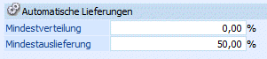
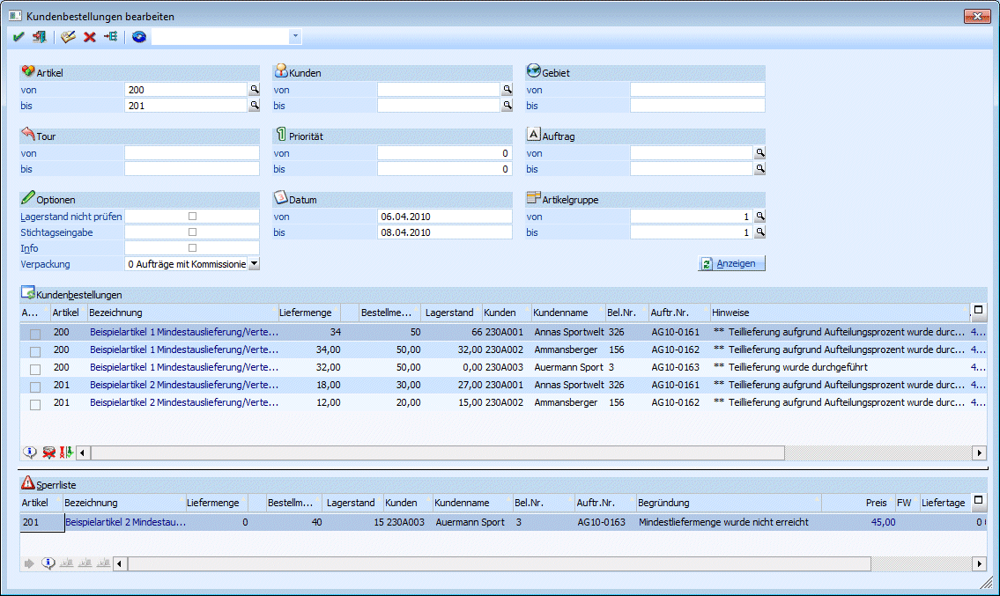

Berechnung der Mindestauslieferung
Im Programm WinLine START kann im Menüpunkt
1 Parameter
1 Applikations-Parameter
1 FAKT-Parameter
1 Belege
1 Kundenbestellungen
ein Prozentsatz für die Mindestauslieferung hinterlegt werden.

Wenn der Lagerstand eines Artikels nicht dem Prozentsatz für die Mindestauslieferung eines Auftrages entspricht, wird der Artikel auf die Sperrliste in "Kundenbestellungen bearbeiten" gesetzt.
Beispiel
Der Kunde erteilt einen Auftrag über 40 Stück. Der Lagerbestand beträgt 15 Stück und als Mindestauslieferung wurden 50 % in den FAKT Parametern hinterlegt.
Dadurch werden die 40 Stück auf die Sperrliste gesetzt, da die Mindestlieferung von 50 % (20 Stück) nicht erreicht wurde.
Berechnung der Mindestverteilung
Für den Fall, dass mehrere Aufträge für einen Artikel vorhanden sind und der Lagerstand nicht ausreichend ist, kommt die Mindestverteilung zum Tragen.
Das Programm berechnet die auszuliefernde Menge immer nach dem Verhältnis des Lagerstandes zur bestellten Menge und versucht, den daraus berechneten Prozentsatz auf die Kunden aufzuteilen.
Ø Formel
Lagerstand / gesamte bestellte Menge * 100
Ist der errechnete Prozentsatz höher als der Mindestverteilungsprozentsatz (lt. FAKT-Parameter), wird der errechnete Prozentsatz herangezogen. Ansonsten gilt der in den FAKT-Parametern hinterlegte Mindestverteilungsprozentsatz.
Hinweis
Es wird immer aufgerundet. Der dritte Auftrag bekommt noch den Rest, welcher auf dem Lager vorhanden ist. Wenn dieser Rest die 50 % Mindestauslieferung unterschreitet, dann wird der dritte Auftrag nicht beliefert.
Beispiel
Die Mindestauslieferung beträgt 50 % und die Mindestverteilung 60 %.
|
Artikel 1 |
Lagerstand 100 |
|
Artikel 2 |
Lagerstand 45 |
|
Auftrag 1 - 06.04. |
|
|
Artikel 1 |
50 Stück |
|
Artikel 2 |
30 Stück |
|
Auftrag 2 - 07.04. |
|
|
Artikel 1 |
50 Stück |
|
Artikel 2 |
20 Stück |
|
Auftrag 3 - 08.04. |
|
|
Artikel 1 |
50 Stück |
|
Artikel 2 |
40 Stück |
Im Menüpunkt…
1 WinLine FAKT
1 Erfassen
1 Kundenbestellung
1 Kundenbestellungen bearbeiten
… werden folgende Mengen zur Lieferung vorgeschlagen.

Berechnung bei Artikel 1
100/150*100 = 67,67%
Auftrag 1 = 50 Stück * 67,67% = 33,3334 à wird auf 34 Stück aufgerundet
Auftrag 2 = 50 Stück * 67,67% = 33,3334 à wird auf 34 Stück aufgerundet
Auftrag 3 = 50 Stück * 67,67% = 33,3334 à nur mehr 32 Stück auf Lager
Berechnung bei Artikel 2
100/90*45 = 50% à die Mindestverteilung von 60% kommt zum Tragen
Auftrag 1 = 30 Stück * 60% = 18 Stück
Auftrag 2 = 20 Stück * 60% = 12 Stück
Auftrag 3 = 40 Stück à da nur mehr 15 Stück auf Lager sind, wird die Mindestauslieferung von 50 % nicht erreicht, daher erfolgt keine Lieferung